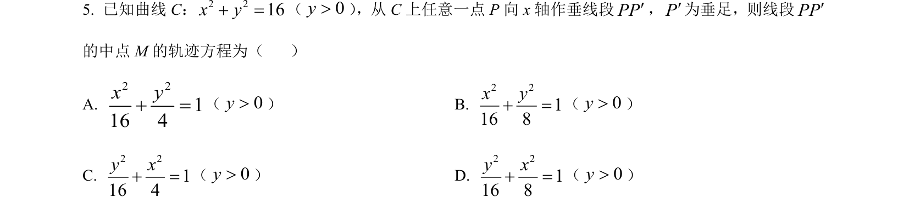
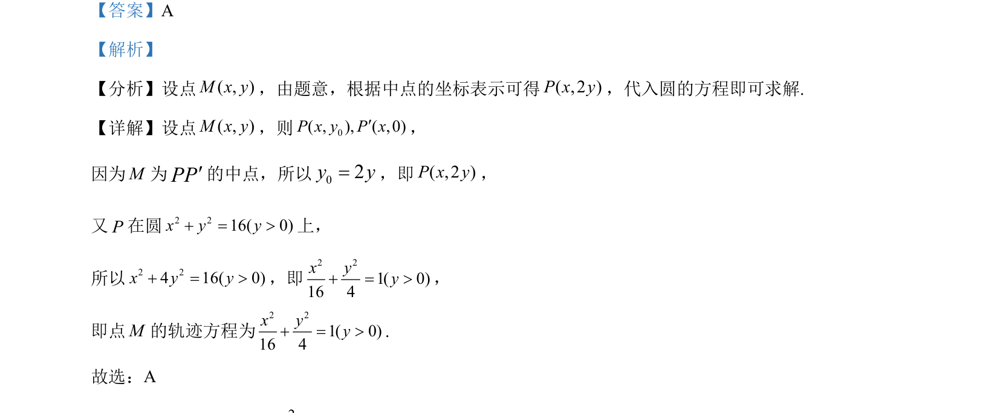

考点：轨迹方程 中点坐标公式 代入法

求圆上动点相关中点的轨迹方程，利用中点公式转移代入得出椭圆方程。

📄 原 PDF 第 3 页：
素材/真题/吉林/2008-2024·（吉林）数学高考真题/2024年高考数学试卷（新课标Ⅱ卷）（解析卷）.pdf
【答案】A 【解析】 【分析】设点( , )M x y，由题意，根据中点的坐标表示可得( ,2 )P x y，代入圆的方程即可求解. 【详解】设点( , )M x y，则 0( , ), ( ,0)P x y P x¢， 因为M为PP¢的中点，所以02y y=，即( ,2 )P x y， 又P在圆2 216( 0)x y y+ = >上， 所以2 24 16( 0)x y y+ = >，即 2 21( 0)16 4x yy+ = >， 即点M的轨迹方程为 2 21( 0)16 4x yy+ = >. 故选：A